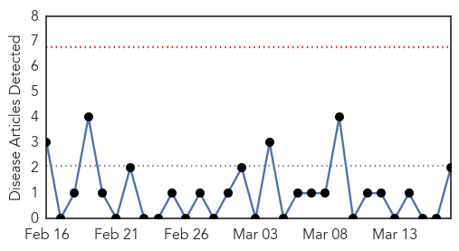
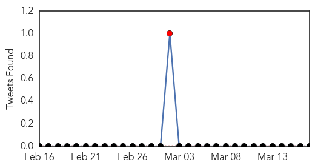
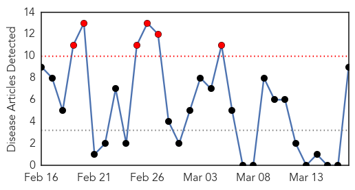

Pertussis
30-Day Web Trend
0 alerts, 0 warnings

30-Day Twitter Trend
1 alerts, 0 warnings

Article Locations
Article Confidences
Top Articles:
Top Tweets:
-
No tweets found for Mar 17, 2015
Cholera
30-Day Web Trend
6 alerts, 0 warnings

30-Day Twitter Trend
4 alerts, 0 warnings

Article Locations

Article Confidences
Top Articles:
- 0.994
- Harare on high cholera alert, says official
- 0.913
- 'Basically, they just fell out of the sky': 2,000 snow geese found dead in Idaho
- 0.875
- ‘Basically, they just fell out of the sky': 2,000 snow geese found dead in Idaho
- 0.739
- 2,000 geese fall dead from the sky in Idaho
- 0.729
- Half a million babies die every year in unclean hospitals, says report
- 0.642
- Thousands of Dead Geese Fall From Sky Over Idaho
- 0.554
- ‘A bad wife spells a hundred years of bad harvests’
- 0.540
- NGO collaborates with Municipal Assembly to strengthen Cholera prevention
- 0.532
- 2,000 dead snow geese ‘basically… just fell out of the sky’ in Idaho — RT USA
Top Tweets:
-
No tweets found for Mar 17, 2015